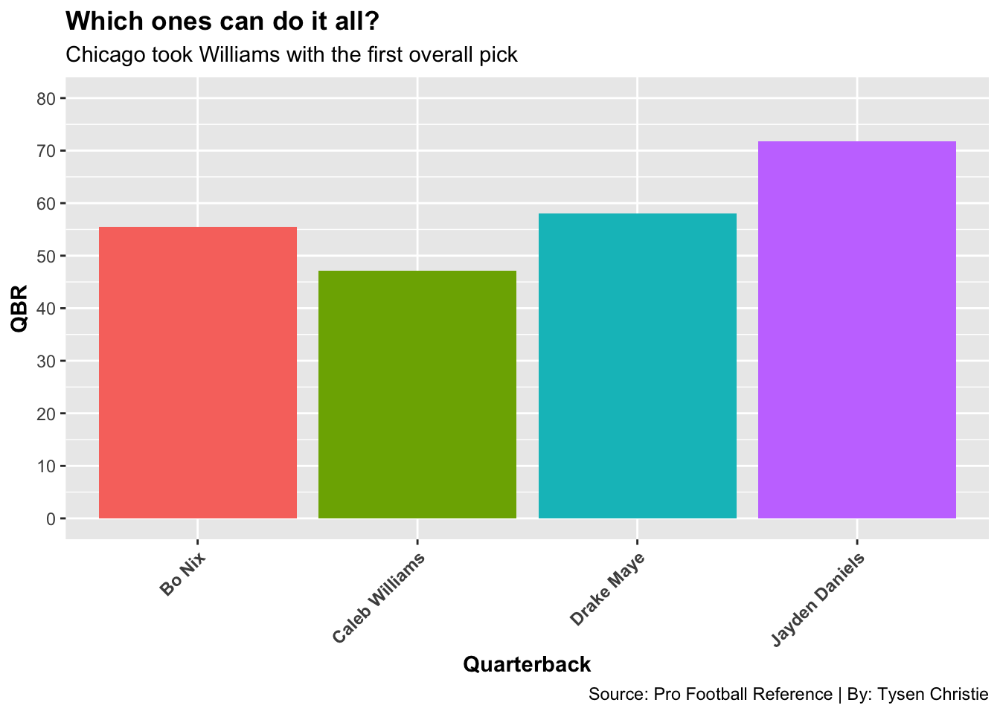
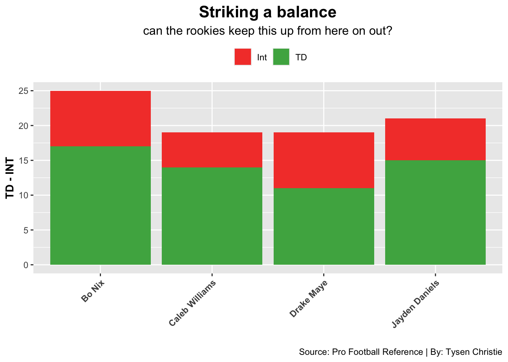
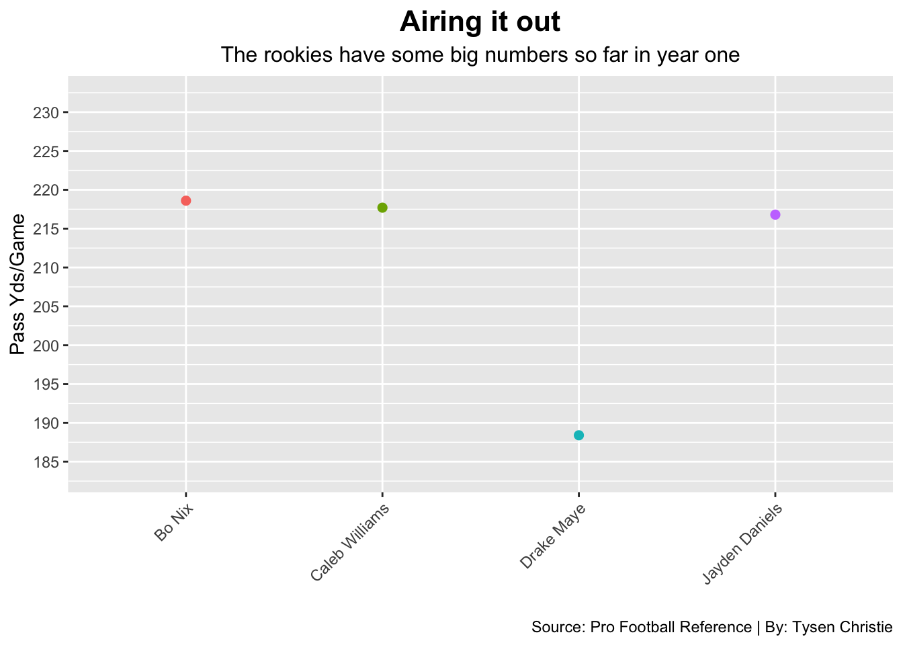

Code
library(tidyverse)
library(ggplot2)
library(nflverse)
library(nflreadr)Tysen Christie
December 4, 2024
Hello
As the 2024 NFL season heads into the final weeks, many players and fans are starting to think about the potential award winners for the year. As many NFL fans know, the Offensive Rookie of the Year award is an award that goes to the best performing offensive rookie, which more times than not, tends to be a quarterback. This year, the talented rookie quarterbacks have made the competition for the award pretty fierce, and closer than it looks. In the NFL, quarterbacks have high expectations from their coaches and teams, and these expectations can play a huge role in a rookie quarterbacks performance right from the get go. However, many things can determine a quarterbacks performance, especially a rookie. These players tend to get put into bad situations on bad teams time and time again, so when looking at stats like wins, passing yards and completion percentage, that is always something to take into consideration. However, at the end of the day all that matters is winning, and winning at the quarterback position requires a player to be very well-rounded in every statistic. Quarterback rating is just an overall rating of a quarterbacks performance.
ggplot(rookieqbs_filt, aes(x = Player, y = QBR, fill = Player)) +
geom_bar(stat = "identity") +
theme_gray() +
labs(
title = "Which ones can do it all?",
subtitle = "Chicago took Williams with the first overall pick",
x = "Quarterback",
y = "QBR",
caption = "Source: Pro Football Reference | By: Tysen Christie"
) +
theme(
axis.text.x = element_text(angle = 45, hjust = 1, face = "bold"),
plot.title = element_text(face = "bold"),
axis.title.x = element_text(face = "bold"),
axis.title.y = element_text(face = "bold"),
legend.position = "none"
) +
scale_y_continuous(
limits = c(0, 80),
breaks = seq(0, 80, by = 10)
)
While quarterback ratings do provide a detailed measure of a quarterback’s overall performance, it is also important to break down and compare certain statistics alone. When looking at quarterback statistics at any level, most people note the amount of touchdowns they’ve scored, and interceptions they’ve thrown. It is the quarterback’s main job to help their offense score, whether that is running or throwing the ball. It is also the quarterback’s job to protect the ball while doing all of this. For rookie quarterbacks, the touchdown to interception ratio is a great way to analyze their performances in their first year. NFL defenses are way more complex and talented than defenses at the college level, so for some rookie quarterbacks it can take some time getting used to, and that is very common. Looking at the main four rookie quarterbacks, they all have a few things in common that you can consider when looking at their touchdown to interception ratios. All four of these quarterbacks play on a team that was below .500 last season, none of them have a good offensive line, and none have a reliable superstar on the offensive side of the ball with them.
rookieqbs_long <- rookieqbs_filt |>
gather(key = "Stat", value = "Count", TD, Int)
ggplot(rookieqbs_long, aes(x = Player, y = Count, fill = Stat)) +
geom_bar(stat = "identity") +
theme_gray() +
labs(
title = "Striking a balance",
subtitle = "can the rookies keep this up from here on out?",
x = "",
y = "TD - INT",
fill = "",
caption = "Source: Pro Football Reference | By: Tysen Christie"
) +
scale_fill_manual(values = c("TD" = "#4CAF50", "Int" = "#F44336")) +
theme(
axis.text.x = element_text(angle = 45, hjust = 1, face = "bold"),
plot.title = element_text(face = "bold", size = 16, color = "black", hjust = 0.5),
axis.title.y = element_text(face = "bold"),
plot.subtitle = element_text(size = 12, color = "black", hjust = 0.5),
legend.position = "top"
)
As you can see, it’s pretty clear that these rookie quarterbacks are being asked to step up in some really tough scenarios. For these quarterbacks, this makes the ability to put up good passing numbers week to week even more challenging for them. Passing yards per game is a statistic that means more than just how many passing yards a player had. To put up good passing yard numbers, quarterbacks are required to command their offense at all points during games and also make certain adjustments that can open up more plays, which leads to more offensive success. The rookie quarterbacks that do these things the best and catch up fast, tend to put of more passing yards than the ones who need a little more time to develop. Unlike veteran quarterbacks who have played a long time and know their teams playbook by heart, when rookies are able to put up great passing yard numbers in just their first year, it is usually a good sign for their future, and their rankings in the rookie of the year award.
ggplot(rookieqbs_filt, aes(x = Player, y = Y.G)) +
geom_line(aes(color = Player), size=1) +
geom_point(aes(color = Player), size =2) +
theme_gray()+
labs(
title = "Airing it out",
subtitle = "The rookies have some big numbers so far in year one",
x = "",
y = "Pass Yds/Game",
color = "Quarterback",
caption = "Source: Pro Football Reference | By: Tysen Christie"
) +
scale_y_continuous(
limits = c(min(rookieqbs_filt$Y.G) -5, 230),
expand = expansion(mult = c(0.05, 0.1)),
breaks = seq(0, 230, by = 5)
) +
theme(
axis.text.x = element_text(angle = 45, hjust = 1),
plot.title.y = element_text(face = "bold", size = 12),
plot.title = element_text(face = "bold", size = 16, hjust = 0.5),
plot.subtitle = element_text(size = 12, color = "black", hjust = 0.5),
legend.position = "none"
)Warning: Using `size` aesthetic for lines was deprecated in ggplot2 3.4.0.
ℹ Please use `linewidth` instead.Warning in plot_theme(plot): The `plot.title.y` theme element is not defined in
the element hierarchy.`geom_line()`: Each group consists of only one observation.
ℹ Do you need to adjust the group aesthetic?
After going through and analyzing all of these different stats put up by these rookies, I think there is one thing that everyone can agree on. This was a very solid rookie quarterback class. However, going back to the main discussion question of who should win rookie of the year, I think there is one name that stands out a little more than the rest. While all of the players above have very similar stats and ratios, I think that Jayden Daniels barely has the edge in passing. However, when you look at rushing stats, it is not even close. So far this season, Jayden Daniels has over double the amount of rushing yards and touchdowns than any other rookie quarterback this year. Like I said previously, the quarterbacks job is to score the ball on offense whether that is by rushing or passing, and not many quarterbacks do the rushing part themselves except for Jayden Daniels. These four first round quarterbacks clearly all have the arm talent, but just a little bit of rushing upside from any quarterback can make them, and their team a lot more dangerous. Jayden Daniels so far has played a huge role in the Washington Commanders comeback story, and I think that he could very easily snag the Rookie of the Year Award, and maybe even a playoff spot that no Commanders fan thought they would have at the beginning of this season.